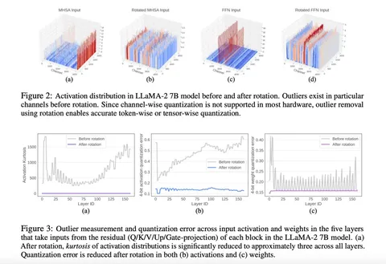

Продолжаем рассказывать о SpinQuant — SOTA-результате w4a4kv4-квантизации, который показывает очень хороший перфоманс даже на «макбуках».
Убедиться в том, что вращение работает, авторы предлагают двумя способами:
— Визуально. Попарное сравнение тензоров до и после вращения — верхний ряд иллюстраций.
— Статистически. В качестве метрики количества выбросов авторы выбрали эксцесс (или 𝛋), который оценивают по моментным статистикам распределений — нижний ряд иллюстраций. После вращения метрика становится стабильнее по всем слоям, а её величина уменьшается.
По словам авторов, метод не отстаёт в производительности от других современных решений и уже внедрён разработчиками. E2E-измерение скорости модели LLaMA-3 8B с конфигурациями W16A16 и W4A8 на процессоре MacBook M1 Pro показало, что 4-битное квантование дает примерно трёхкратный прирост скорости по сравнению с 16-битной моделью.
Похожего ускорения можно (и нужно) добиться и на GPU, но есть важный нюанс: видеокарта должна поддерживать быстрое вычисление 4-битного GeMM на тензорных ядрах. Однако NVIDIA не предоставляет такую функциональность на архитектуре Hopper, хотя на всех остальных архитектурах она есть.
Разбор подготовил
Душный NLP
